Projecten
35 projecten, met trots gemaakt
Een selectie uit ruim 528 opgeleverde projecten, door heel Nederland.
 Raadzaal Peel en Maas
Raadzaal Peel en Maas
 Panenka
Rotterdam
Panenka
Rotterdam
 Karl Lagerfeld Café
Amsterdam
Karl Lagerfeld Café
Amsterdam
 Heijmans
Den Bosch
Heijmans
Den Bosch
 Coöperatie VGZ
Eindhoven
Coöperatie VGZ
Eindhoven
 Janzen
Den Bosch
Janzen
Den Bosch
 First Impression
Tilburg
First Impression
Tilburg
 Hotel Via Via
Leeuwarden
Hotel Via Via
Leeuwarden
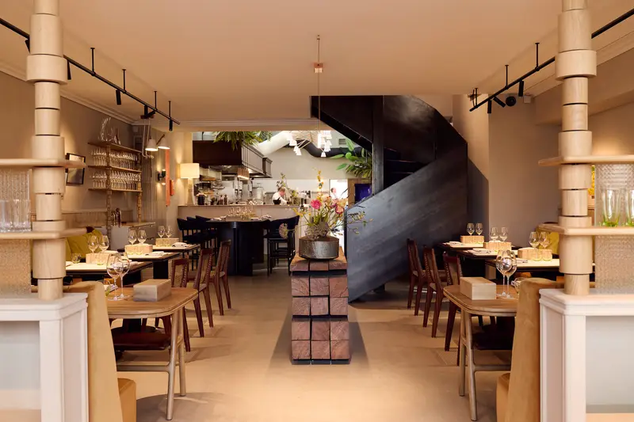
Restaurant SAAM Amstelveen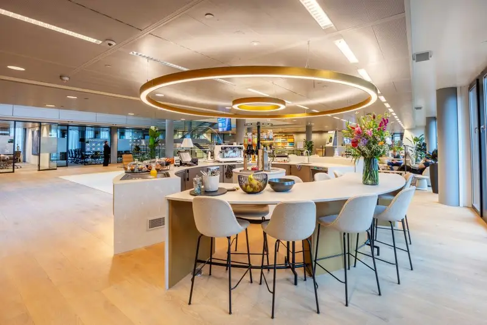
Lexence Advocaten Amsterdam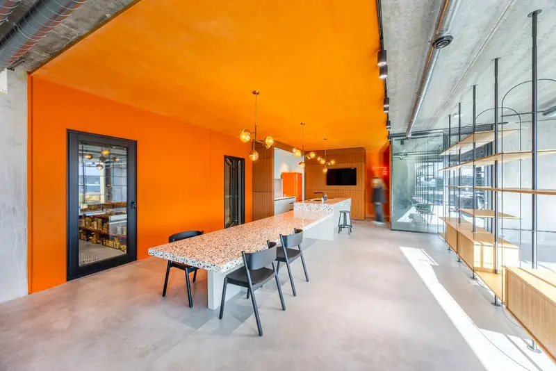
Go Dutch Label Den Bosch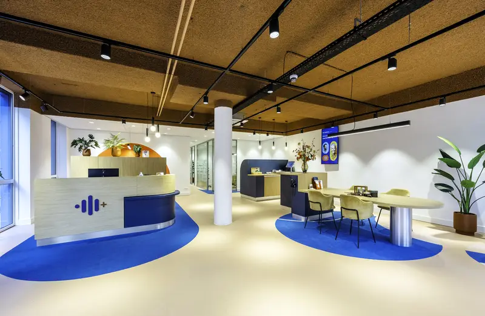
Stufkens Hoorcentrum Venlo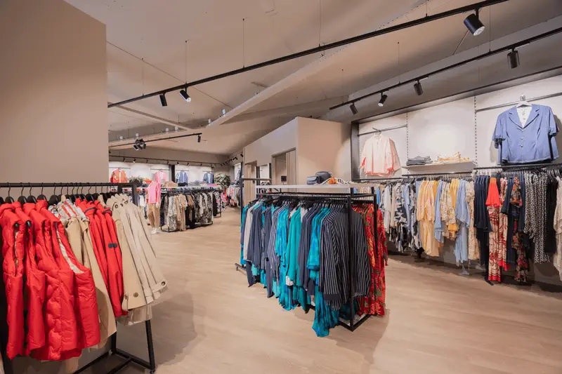
Maxim's Best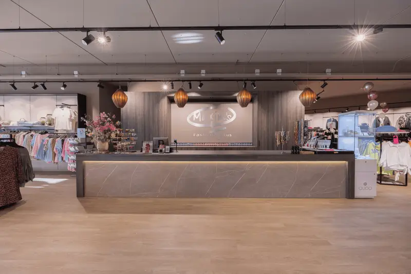
Served Rotterdam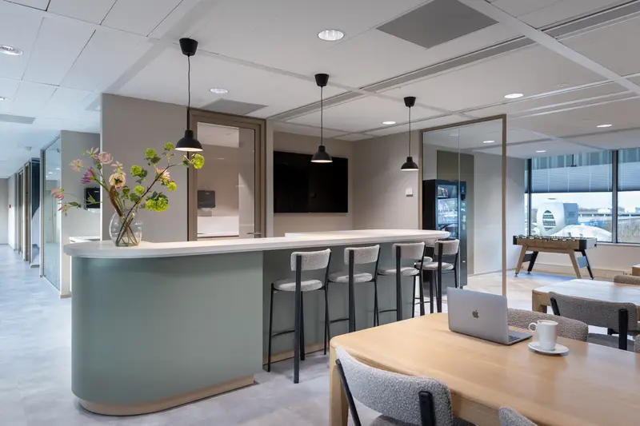
SEB Professional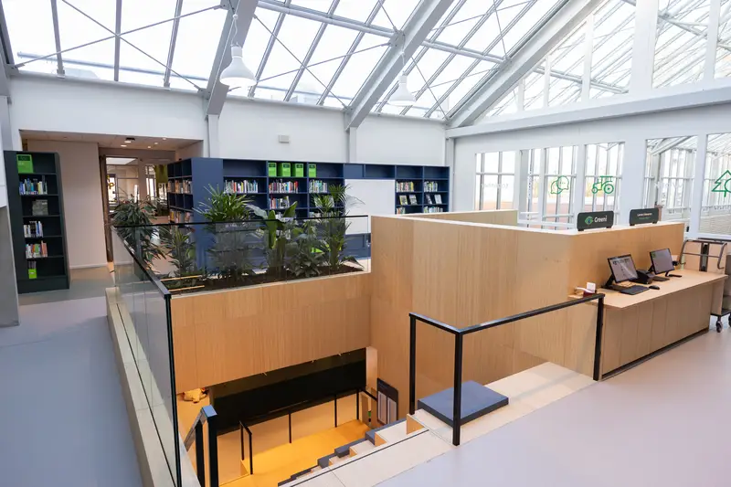
HAS green academy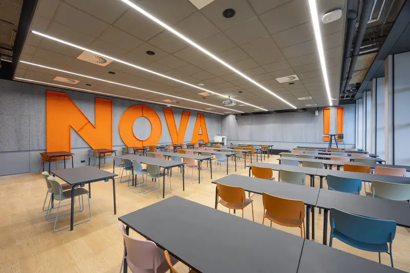
Nova College Haarlem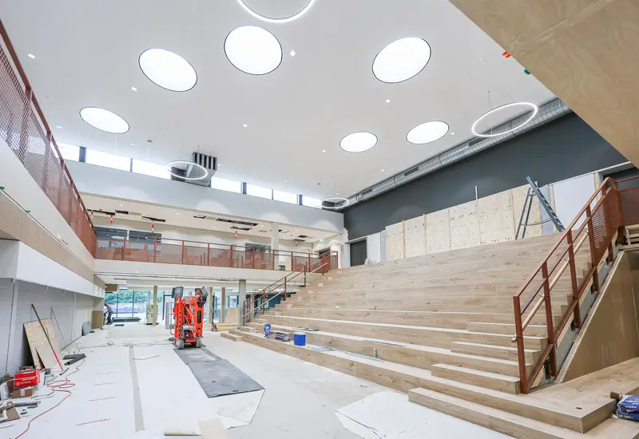
Varendonck College Asten en Someren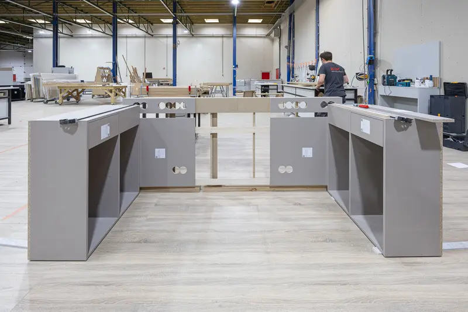
Teylers Museum Haarlem Gemeentehuis Heumen
Heumen
Gemeentehuis Heumen
Heumen
 1801 Jeugd en Onderwijsadvies
Arnhem
1801 Jeugd en Onderwijsadvies
Arnhem
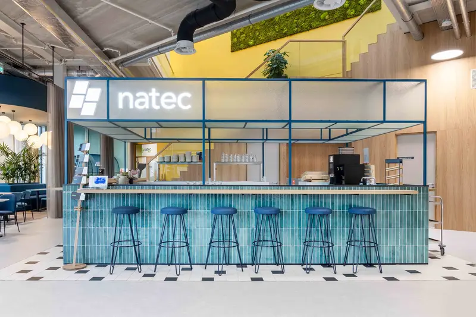
Natec Sunergy Den Bosch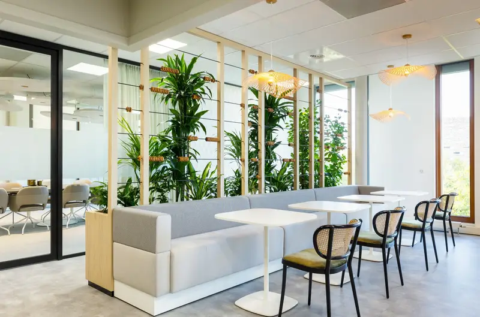
SvRK & Streefkerk Onderwijsrecht Utrecht AFG Group
Waalwijk
AFG Group
Waalwijk
 Pot & Vaas
Pot & Vaas
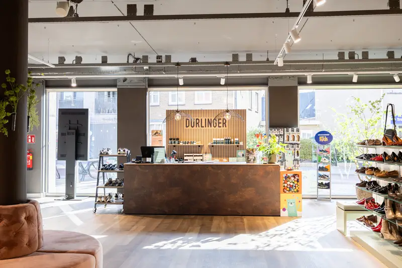
Durlinger Rosmalen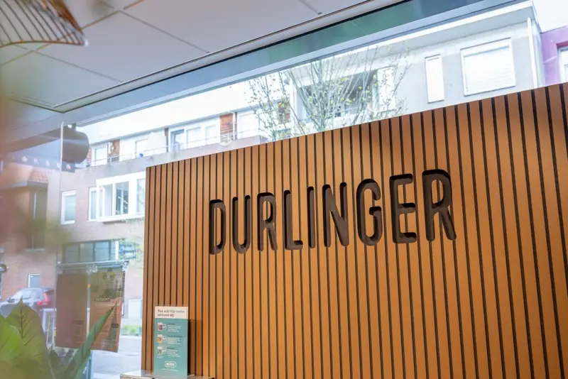
Durlinger Valkenswaard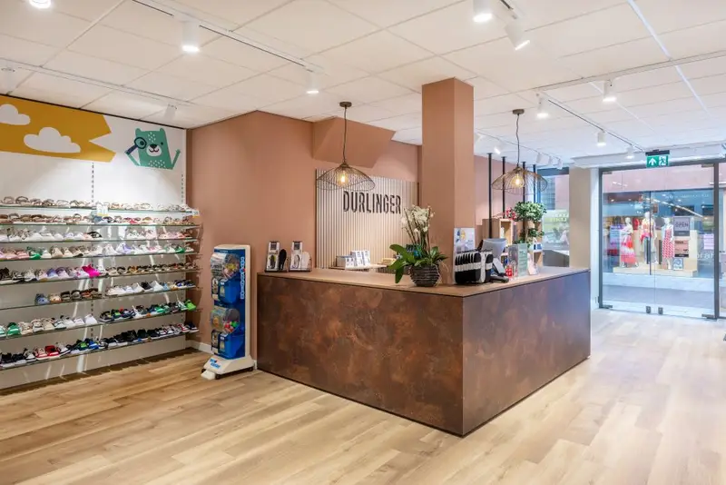
Durlinger Venray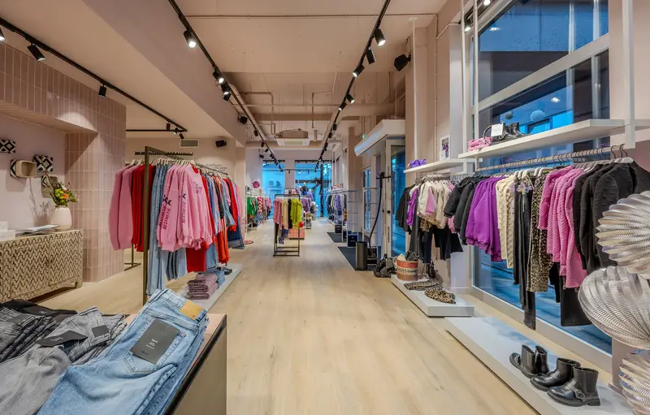
Shoeby Bergen op Zoom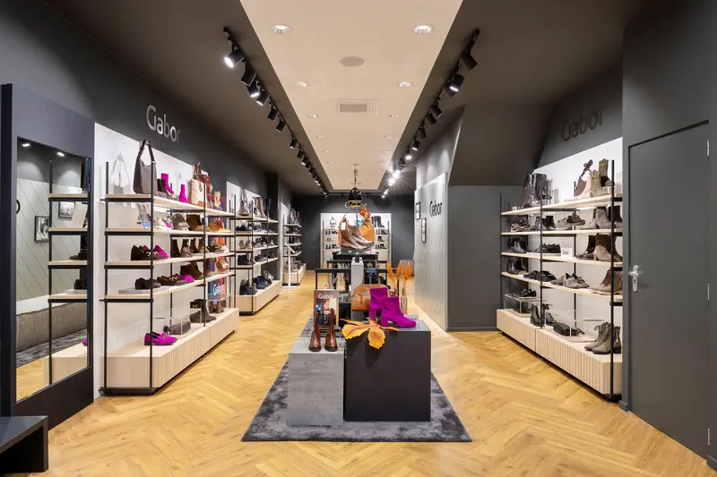
Gabor Breda en Arnhem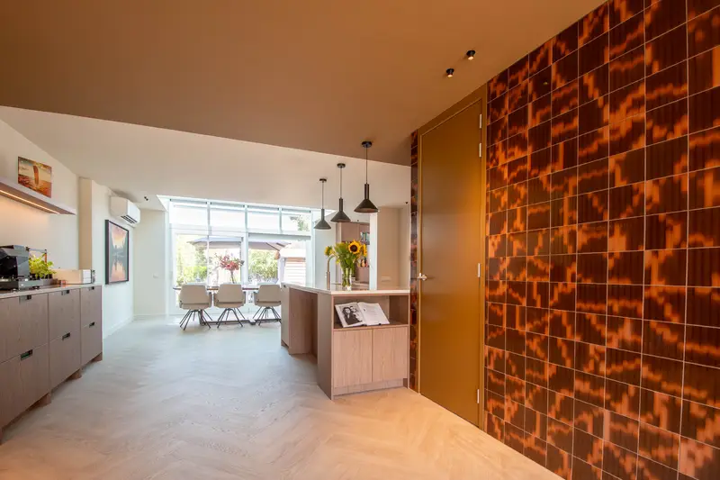
Particuliere woningen Oss en Den Bosch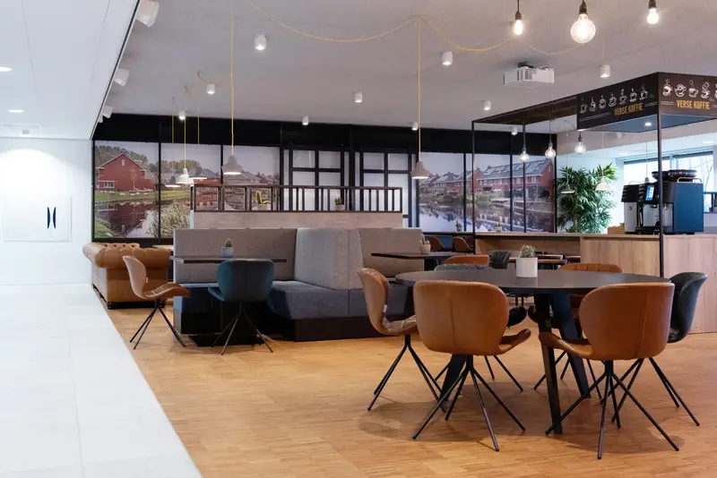
Dura Vermeer Rotterdam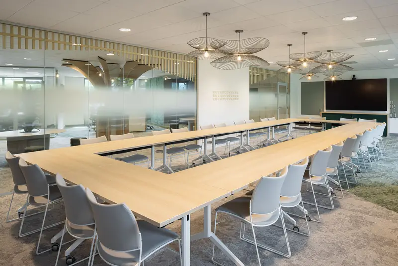
Kind & Co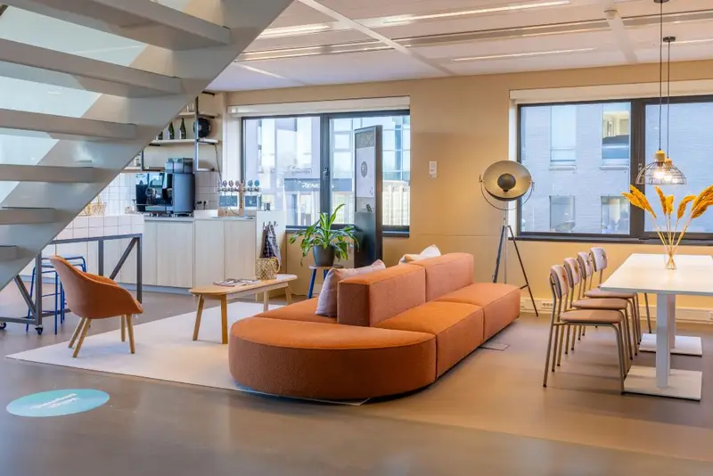
HeyDay Den Bosch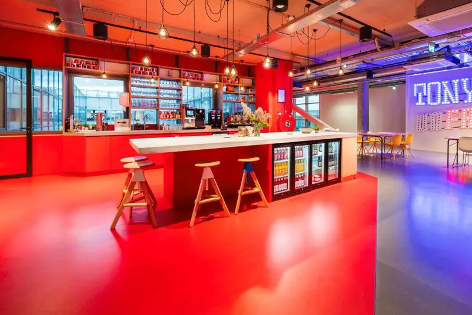
Tony's Chocolonely Amsterdam
Afspraak is afspraak
Vertel ons je ideeën
Een los meubel of een compleet pand: we komen langs, meten op en sturen je een offerte op maat.